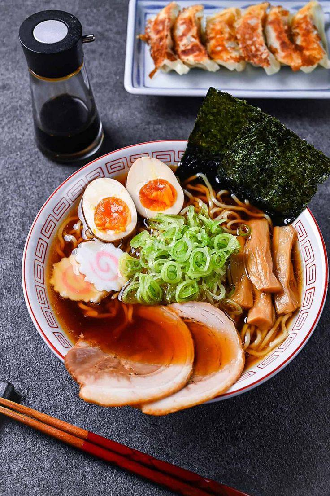

Le Japon, île mystérieuse et fascinante d’Asie de l’Est, est un pays où l’harmonie entre tradition et modernité se manifeste à chaque coin de rue. Surnommé “le pays du Soleil Levant”, il est connu pour ses paysages spectaculaires, allant des montagnes volcaniques aux plages sereines, ainsi que pour ses villes ultra-modernes comme Tokyo, où la technologie de pointe côtoie des temples anciens.
À travers ses arts, sa cuisine raffinée et sa culture millénaire, le Japon a su préserver son identité tout en s’adaptant aux évolutions du monde moderne. Du calme zen des jardins japonais à l’effervescence des métropoles, chaque aspect du Japon raconte une histoire d’innovation, de respect des traditions et de quête d’équilibre.
Sanctuaire Asakusa
Le sanctuaire Asakusa, ou Sensō-ji, est l’un des plus anciens et des plus vénérés sanctuaires bouddhistes de Tokyo, au Japon. Situé dans le quartier historique d’Asakusa, il attire des millions de visiteurs chaque année, venus non seulement pour son importance religieuse, mais aussi pour la beauté de son architecture et la richesse de son histoire. Fondé au VIIᵉ siècle, le sanctuaire est dédié à Kannon, la déesse de la miséricorde, et constitue un lieu de prière, de réflexion et de festivités.
L’entrée du sanctuaire est marquée par la porte Kaminarimon, une imposante porte rouge ornée de lanternes géantes, qui mène à une rue commerçante animée, Nakamise-dori, regorgeant de boutiques traditionnelles. Le sanctuaire Asakusa est ainsi un lieu de rencontre entre tradition, spiritualité et culture, offrant une expérience immersive dans l’âme du vieux Tokyo.
Fushimi Inari-Taisha
Le Fushimi Inari Taisha, situé à Kyoto, est l’un des sanctuaires les plus emblématiques du Japon, réputé pour ses milliers de torii rouges qui serpentent à travers les collines environnantes. Ce sanctuaire shintoïste, dédié à Inari, le dieu de la riziculture et de la prospérité, attire des visiteurs du monde entier grâce à son atmosphère mystique et ses paysages saisissants.
Le chemin bordé de torii, connu sous le nom de Senbon Torii, constitue l’une des images les plus iconiques du Japon, avec ses arches colorées formant un tunnel vivant au cœur de la nature. Ce sanctuaire, à la fois spirituel et visuellement spectaculaire, invite à la contemplation et à la découverte, offrant une immersion unique dans la culture japonaise, l’histoire religieuse et les traditions ancestrales.
Kiyomi-Dera
Le Kiyomizu-dera, situé à Kyoto, est l’un des temples les plus célèbres et les plus impressionnants du Japon, inscrit au patrimoine mondial de l’UNESCO. Fondé au VIIIᵉ siècle, ce temple bouddhiste est dédié à Kannon, la déesse de la miséricorde, et attire chaque année des millions de visiteurs venus admirer son architecture unique et son cadre naturel exceptionnel.
Le temple est célèbre pour sa grande terrasse en bois, soutenue par des centaines de colonnes, qui offre une vue spectaculaire sur la ville de Kyoto et les montagnes environnantes, particulièrement en automne, lorsque les feuilles des arbres se parent de couleurs vives. Kiyomizu-dera, dont le nom signifie “eau pure”, fait référence à la cascade Otawa, dont les eaux sont censées avoir des vertus bénéfiques. Ce lieu sacré est un symbole de la beauté et de la spiritualité japonaises, attirant à la fois les pèlerins et les admirateurs de la culture japonaise.
Parc de Nara
Le parc de Nara, situé au cœur de la ville de Nara, est l’un des plus anciens et des plus charmants parcs du Japon. Étendu sur plus de 500 hectares, ce parc est un véritable havre de paix où la nature, l’histoire et la culture se rencontrent. C’est également le domicile de centaines de cerfs sauvages, considérés comme des messagers des dieux dans la tradition shintoïste, qui se déplacent librement dans le parc, apportant une touche de magie à ce lieu sacré.
Le parc abrite également plusieurs sites historiques majeurs, dont le Todai-ji, un temple bouddhiste abritant la plus grande statue de Bouddha en bronze du monde, ainsi que le sanctuaire Kasuga Taisha, un lieu de culte emblématique. Avec ses vastes espaces verts, ses monuments majestueux et ses cerfs gracieux, le parc de Nara offre une expérience unique, alliant sérénité, beauté naturelle et richesse culturelle.
Chateau d'Himeji
Le château d’Himeji, situé dans la ville d’Himeji, est l’un des châteaux les mieux préservés du Japon et un chef-d’œuvre de l’architecture féodale japonaise. Surnommé “le château du héron blanc” en raison de son apparence élégante et de sa couleur blanche éclatante, ce château est un symbole de la grandeur et de la sophistication des samouraïs. Construit au début du XVIIᵉ siècle, il est inscrit au patrimoine mondial de l’UNESCO et attire chaque année des milliers de visiteurs fascinés par sa beauté et son histoire.
Le château d’Himeji est remarquable non seulement par son esthétique impressionnante, avec ses multiples niveaux, ses murs blancs et ses toits courbés, mais aussi par ses fortifications complexes et ses systèmes de défense ingénieux. Il représente l’apogée de l’art militaire japonais et reste une icône de la culture et de l’histoire du pays, offrant une immersion fascinante dans le Japon féodal.
Mont Fuji
Le mont Fuji, situé sur l’île de Honshu au Japon, est l’un des volcans les plus célèbres et les plus emblématiques du monde. Culminant à 3 776 mètres, il est la montagne la plus haute du Japon et un symbole national de beauté, de sérénité et de spiritualité. Sa silhouette conique parfaite, souvent couronnée de neige, est inscrite dans de nombreuses œuvres d’art et de littérature japonaises, et elle est un lieu de pèlerinage pour de nombreux Japonais.
Le mont Fuji est également un site inscrit au patrimoine mondial de l’UNESCO, reconnu non seulement pour sa majesté naturelle mais aussi pour son rôle dans la culture japonaise. Les randonneurs et les passionnés de nature viennent du monde entier pour gravir ses pentes, admirer ses paysages spectaculaires et découvrir la richesse de la faune et de la flore qui l’entourent. Ce majestueux volcan est bien plus qu’un simple sommet : il incarne la spiritualité japonaise et la connexion profonde entre l’homme et la nature.
Quelques les Spécialités Culinaires
Tempura
Le tempura est une spécialité culinaire japonaise emblématique, reconnue pour sa légèreté et son croquant irrésistible. Ce plat consiste en des légumes, fruits de mer ou parfois même des morceaux de poisson, enrobés d’une fine pâte à frire et plongés dans l’huile chaude jusqu’à obtenir une texture dorée et croustillante. Originaire du Japon, mais influencé par des techniques de friture introduites par les Portugais au XVIe siècle, le tempura incarne aujourd’hui l’élégance et la simplicité de la cuisine japonaise. Servi avec une sauce légère à base de dashi, de soja et de mirin, il offre un équilibre parfait entre tradition et subtilité. Que ce soit en entrée, en plat principal ou comme accompagnement, le tempura ravit les amateurs de saveurs délicates.
Ramen
Le ramen est un plat japonais populaire et réconfortant, qui séduit par sa simplicité et la profondeur de ses saveurs. Il se compose de nouilles de blé servies dans un bouillon savamment préparé, souvent à base de viande, de soja ou de miso, et agrémenté de divers ingrédients comme des tranches de porc, des œufs durs, des légumes et des algues nori. D'origine chinoise, le ramen a été adapté et transformé en une spécialité nationale au Japon, où il existe de nombreuses variantes régionales, chacune avec son propre bouillon et ses garnitures caractéristiques. Plat emblématique de la culture japonaise, le ramen est bien plus qu’un simple repas; il incarne l'art de la cuisine de rue japonaise, où chaque bol est une invitation à savourer un équilibre parfait entre textures et goûts.

Okonomiyaki
L'okonomiyaki est un plat emblématique de la cuisine japonaise, souvent décrit comme une sorte de "crêpe salée" ou de "pancake" copieux. Son nom, qui signifie littéralement "ce que vous aimez, cuit", reflète sa nature polyvalente et personnalisable, car il peut être garni de divers ingrédients selon les préférences, tels que du chou, de la viande (comme le porc ou les fruits de mer), des œufs, et parfois même des nouilles. Cuit sur une plaque chauffante, l'okonomiyaki est souvent servi avec une sauce épaisse et sucrée, ainsi que des flocons de bonite séchée (katsuobushi) et un peu de mayonnaise japonaise. Ce plat convivial, originaire d'Osaka, incarne l'esprit de partage et de créativité de la cuisine de rue japonaise, offrant une expérience gustative savoureuse et réconfortante.